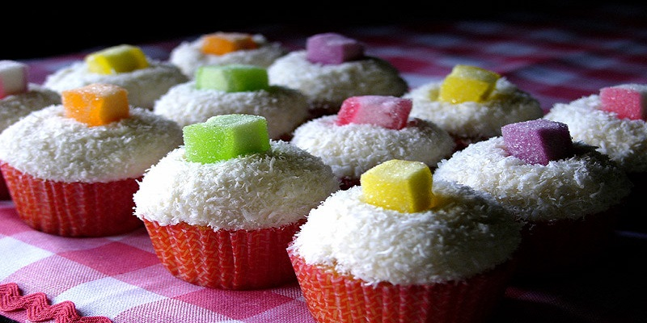
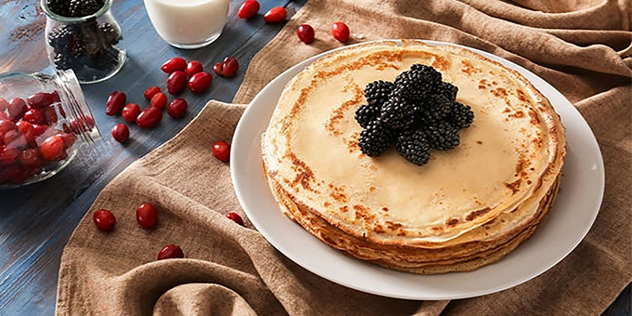

Beijinho
- 1 lata leite condensado.
- 1 copo leite em pó.
- 100 gramas coco ralado.
- 1 colher rasa manteiga.
Mexa a manteiga, o leite condensado e o coco ralado ao fogo até ferver e engrossar um pouco. Desligue o fogo. Acrescente o leite em pó aos poucos, misturando-o. Coloque em um recipente e deixe gelar.
Panqueca
- 2 xicaras de farinha de trigo.
- 2 xicaras de chaz de leite.
- 3 ovos.
- 1 pitada de sal.
Bata todos os ingreditentes no liquidificador. Unte a frigideira e leve ao fogo até aquecer. Pegue uma porção de massa e coloque na frigideira e espalhe. Deixe dourar e vire.
Crepioca

- 1 colher de goma de tapioca.
- 1 ovo.
- 1 pitada de sal.
Bata bem o ovo, adiciona a goma de trapioca e sal e bata novamente. Despeje em uma frigideira lervemente quenrte e deixa até dourar. Vire para dourar o outro lado.